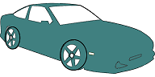
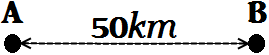

Problemas de velocidad
Los siguientes problemas son de movimientos con velocidad constante y en línea recta. La fórmula básica de este movimiento es
\[x = v \cdot t\]
donde \(x\) es la distancia que recorre el móvil (en km), \(v\) es la velocidad del móvil (en km/h) y \(t\) es el tiempo que dura el movimiento (en h).
Problema 1

Un auto circula a una velocidad constante de 36 km/h durante 90 minutos (1,5 h). ¿Qué distancia recorre?
Problema 2
Un tren de alta velocidad tarda 45 minutos en recorrer una distancia de 240 kilómetros. ¿Cuál es su velocidad?
Problema 3
Si un avión vuela a una velocidad de 1040 km/h desde Bogotá (Colombia) a Lima (Perú) y tarda 2 horas y 45 minutos, ¿cuál es la longitud de la ruta?
Problema 4
Un auto y una motocicleta circulan por la misma carretera recta, pero en sentido contrario. Ambos han partido en el mismo momento a una distancia de 100km y se quiere conocer cuánto tardarán en encontrarse.
La velocidad del auto es 120km/h y la de la motocicleta es 80km/h.
Problema 5
Recorremos un camino de 1 km a una velocidad de 6 km/h. ¿Cuánto tardamos en llegar al destino?
Problema 6
¿Cuánto se tarda en recorrer una distancia de 10km a una velocidad de 40km/h?
Problema 7
En un maratón de 45 km, el ganador corrió a una velocidad media de 16 km/h mientras que el último clasificado lo hizo a 7.5 km/h. ¿Cuánto tiempo tardaron en llegar a la meta cada uno de ellos?
Problema 8
La distancia entre las ciudades A y B es de 50 km. A la misma hora, salen un camión de la ciudad A a 60 km/h y un ciclista de la ciudad B a 25 km/h. Se desea calcular cuánto tardarán en encontrarse si ambos vehículos circulan por la misma carretera pero en sentido opuesto.

Problema 9
Calcular la velocidad de un avión que tarda una hora y treinta minutos en recorrer los 930 km que separan Londres de Berlín.
Problema 10
El Lockheed SR-7 (o Blackbird) fue el avión tripulado más rápido del mundo en su día (3500km/h). Calcular la distancia que recorrería en 1 segundo y cuánto tardaría en volar desde el Polo Norte al Polo Sur (20000km).